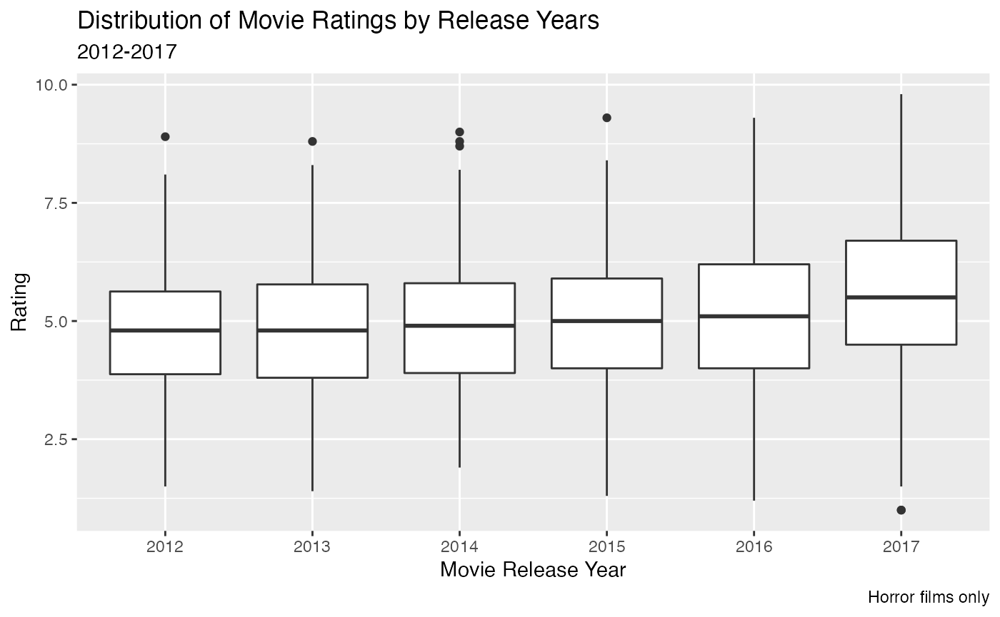

Rpart Example: Predicting Horror Film Ratings
Carly Lupton-Smith
2022-12-07
Source:vignettes/rpart_filmexample.Rmd
rpart_filmexample.RmdIntroduction
In this vignette, we will be displaying an example of rpart applied to a dataset of horror films. The data contains information about the film genre, release date, reviews, run time, case, budget, etc. We will be using rpart to develop a model that predicts rating based on some factors of the movie. We are therefore working to answer the question, what factors of horror movies make them more likely to have a good rating?
This data can be found at: https://github.com/rfordatascience/tidytuesday/tree/master/data/2019/2019-10-22. This link also contains a data dictionary.
current_wd <- getwd()
if (file.exists("data")) {
setwd(file.path(current_wd, "data"))
} else {
dir.create(file.path(current_wd, "data"))
setwd(file.path(current_wd, "data"))
}
if (file.exists("horror_films.csv")) {
horror_films <- readr::read_csv("horror_films.csv")
} else {
horror_films <- readr::read_csv("https://raw.githubusercontent.com/rfordatascience/tidytuesday/master/data/2019/2019-10-22/horror_movies.csv")
readr::write_csv(horror_films, "horror_films.csv")
}We can first get a glimpse of the data and the distribution of the film ratings. We will be removing any films without a rating.
library(tidyverse)
library(rpart)
horror_films <- horror_films %>% filter(is.na(review_rating)==F)
glimpse(horror_films)## Rows: 3,076
## Columns: 12
## $ title <chr> "Gut (2012)", "Treasure Chest of Horrors II (2013)",…
## $ genres <chr> "Drama| Horror| Thriller", "Comedy| Horror| Thriller…
## $ release_date <chr> "26-Oct-12", "23-Apr-13", "10-Apr-15", "3-Jun-14", "…
## $ release_country <chr> "USA", "USA", "USA", "USA", "Japan", "Spain", "India…
## $ movie_rating <chr> NA, "NOT RATED", NA, "NOT RATED", NA, "PG-13", NA, N…
## $ review_rating <dbl> 3.9, 3.7, 5.8, 5.1, 6.5, 4.6, 5.4, 5.3, 3.6, 5.9, 2.…
## $ movie_run_time <chr> "91 min", "82 min", "80 min", "90 min", "117 min", "…
## $ plot <chr> "Directed by Elias. With Jason Vail, Nicholas Wilder…
## $ cast <chr> "Jason Vail|Nicholas Wilder|Sarah Schoofs|Kirstianna…
## $ language <chr> "English", "English", "Italian", "English", "Japanes…
## $ filming_locations <chr> "New York, USA", "Baltimore, Maryland, USA", NA, NA,…
## $ budget <chr> NA, NA, NA, NA, NA, NA, NA, NA, "$7,000", NA, NA, "I…Pre-Processing Variables
The variables that seem most relevant to our outcome of review rating are genre, release year, release country, movie rating, movie run time, and budget.
perc_mis <- function(var) {
variable <- select(horror_films, {{var}})
percent_na <- round(sum(is.na(variable))/nrow(variable)*100,1)
return(percent_na)
}
mis <- map_dbl(.x = list("genres","release_date","release_country",
"movie_rating","movie_run_time","budget"),
.f = perc_mis)
names(mis) <- c("genres","release_date","release_country",
"movie_rating","movie_run_time","budget")
print(mis)## genres release_date release_country movie_rating movie_run_time
## 0.0 0.0 0.0 53.1 12.3
## budget
## 62.7From the above missingness percentages, we see that there is very high missingness for movie rating and budget. From this information, it might make most sense to focus on the remaining four variables.
Now we will perform some pre-processing on the remaining variables.
pattern_detect <- function(pattern) {
setNames(data.frame(sum(str_detect(horror_films$genres, pattern))), pattern)
}
genre <- map_dfc(.x=c("Drama","Romance","Comedy","Horror","Mystery",
"Thriller","Fantasy","War","Action","Adventure",
"Sci-Fi","Western","Crime","Family","Animation",
"Sport","History","Biography","Adult","Musical"),
.f=pattern_detect)
print(genre)## Drama Romance Comedy Horror Mystery Thriller Fantasy War Action Adventure
## 1 508 95 498 3076 436 1319 221 14 321 115
## Sci-Fi Western Crime Family Animation Sport History Biography Adult Musical
## 1 295 14 113 11 38 4 6 4 1 12
genre_t <- t(genre) %>% data.frame()
names(genre_t) <- "Number"
genre_t %>%
filter(Number >= 20) %>%
rownames_to_column("Genre") %>%
ggplot(aes(x=reorder(Genre,-Number), y=Number)) +
geom_bar(stat="identity") +
theme(axis.text.x = element_text(angle=45)) +
xlab("Genre") + ylab("Number of Films") +
labs(title = "Number of Films with each Genre Label",
subtitle = "Horror Films from IMDB",
caption = "Films could have more than one genre; genres with less than 20 films are excluded")We can see that there are many genres that only appear in a small percentage of the films, and that all films are marked as Horror. Let’s create a couple of new variables that break down the more popular genres: thriller, drama, comedy, and mystery.
library(lubridate)
horror_rel <- horror_films %>%
mutate(release_year = ifelse(release_date %in% c("2012","2013","2014",
"2015","2016","2017"),
release_date,
year(dmy(release_date))),
release_year = as.numeric(release_year),
release_country = factor(ifelse(release_country == "USA", "USA", "Other")),
genre_thriller = ifelse(str_detect(genres, "Thriller"), 1, 0),
genre_drama = ifelse(str_detect(genres, "Drama"), 1, 0),
genre_comedy = ifelse(str_detect(genres, "Comedy"), 1, 0),
genre_mystery = ifelse(str_detect(genres, "Mystery"), 1, 0),
movie_run_time = str_remove(movie_run_time, " min"),
movie_run_time = as.numeric(movie_run_time))As one more step of descriptively investigating the data, let’s look at the distribution of review ratings across each year.
horror_rel %>%
ggplot(aes(x=factor(release_year), y=review_rating)) +
geom_boxplot() +
xlab("Movie Release Year") + ylab("Rating") +
labs(title = "Distribution of Movie Ratings by Release Years",
subtitle = "2012-2017",
caption = "Horror films only")
We can see there do not seem to be major differences in the distributions, but there might be a slight upward trend.
Finally, one last plot dives into movie run time based on genre. We see here that there do not seem to be major differences in the distribution of run time depending on the movie genre.
horror_rel %>%
filter(xor(genre_drama == 1, genre_comedy == 1)) %>%
mutate(DorC = ifelse(genre_drama==1, "Horror-Drama", "Horror-Comedy")) %>%
ggplot(aes(x=movie_run_time)) +
geom_histogram(bins=30, color="black", fill="white") +
facet_wrap(~DorC, nrow=2) +
xlab("Movie Run Time") + ylab("Number of Films") +
labs(title = "Movie Run Time Distribution based on Genre",
subtitle = "Horror-Comedy versus Horror-Drama",
caption = "Removed movies that were both drama and comedy")Rpart
Now we will demonstrate how to use rpart. We will create a training and testing set, fit the model, prune it, and interpret the output and estimate the testing error.
library(rsample)
split <- initial_split(horror_rel, prop=3/4)
train <- training(split)
test <- testing(split)Now we fit the model.
set.seed(2)
fit <- rpart(review_rating ~ movie_run_time + release_country + release_year +
genre_thriller + genre_drama + genre_comedy + genre_mystery,
data = train)Now we will prune the model.
printcp(fit)##
## Regression tree:
## rpart(formula = review_rating ~ movie_run_time + release_country +
## release_year + genre_thriller + genre_drama + genre_comedy +
## genre_mystery, data = train)
##
## Variables actually used in tree construction:
## [1] movie_run_time release_year
##
## Root node error: 5132.1/2307 = 2.2246
##
## n= 2307
##
## CP nsplit rel error xerror xstd
## 1 0.033717 0 1.00000 1.00084 0.027865
## 2 0.022651 1 0.96628 0.97246 0.028108
## 3 0.010000 2 0.94363 0.95249 0.027206Now we will investigate our resulting model.
library(rpart.plot)
rpart.plot(pfit)
#post(pfit, file = "resulting_tree.pdf",
# title = "Pruned Regression Tree for Movie Rating")
test_pred <- predict(pfit, test)
# test %>%
# bind_cols(pred_rating = test_pred) %>%
# ggplot(aes(x=review_rating, y=pred_rating)) +
# geom_point() +
# geom_abline(slope=1, intercept=0) +
# xlab("True Rating") + ylab("Predicted Rating")
print(paste("The MSE for the testing data is",
round(mean((test$review_rating - test_pred)^2),2)))## [1] "The MSE for the testing data is 1.94"We can see that we have pretty high MSE in our testing dataset, considering that the range of the ratings is from 1-10. This indicates that it would be worth exploring other variables to better model horror movie ratings. In the model that we do have here, we see that the tree splits on movie run time and release year, where movies that are longer have a higher average rating. For movies that are less than the cutoff, the movies that were released earlier have a lower average rating than movies released later.